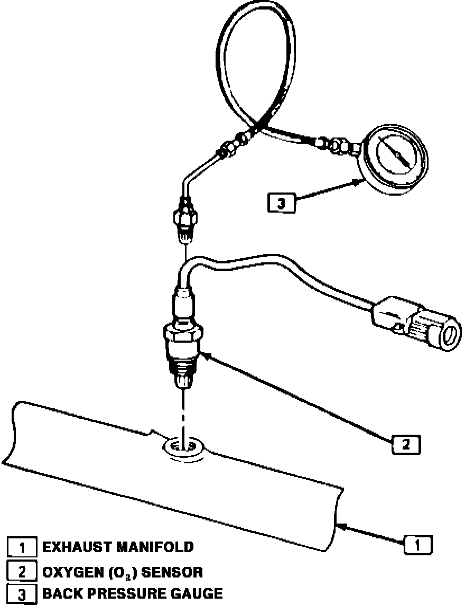

With Backpressure Gauge
Pressure Testing The Exhaust System at The Oxygen Sensor:

NOTE: A partially restricted or blocked exhaust system usually results in a loss of power or backfire up through the throttle body. Verify that the condition is not caused by ignition or fuel system problems, then perform a visual inspection of the exhaust system. If the condition cannot be located by visual inspection, perform the following procedure.
CHECK AT OXYGEN SENSOR
1. Carefully remove O2 sensor with proper removal tool.
2. Install Exhaust Backpressure Tester in place of 02 sensor.
3. With the engine at normal operating temperature and running at 2500 RPM, observe the exhaust system backpressure reading on the gauge.
4. If the backpressure exceeds 1-1/4 psi (8.62 kPa), a restricted exhaust system is indicated.
5. Inspect the entire exhaust system for a collapsed pipe, heat distress, or possible internal muffler failure.
6. If there are no obvious reasons for the excessive backpressure, a restricted catalytic converter should be suspected, and replaced.
7. Coat threads of 02 sensor with antiseize compound and re-install.